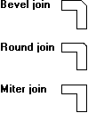

description: 'The join attribute specifies how the ends of two geometric lines are joined: beveled, mitered, or round. The following illustration shows pairs of connected lines drawn using each type of join.'
ms.assetid: 50faec1e-61a0-4d08-aa8c-ce0204038579
title: Pen Join
ms.topic: article
ms.date: 05/31/2018
Pen Join
The join attribute specifies how the ends of two geometric lines are joined: beveled, mitered, or round. The following illustration shows pairs of connected lines drawn using each type of join.

Â
Â